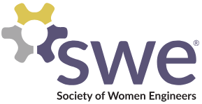

Background
My name is Aatisha Cyrill. I am a first year graduate student at UW Madison, pursuing Master's in Information Science with specialization in User Experience.
I found my passion for design during my undergrad years when I contributed to design activities for various college events and products. It truly makes me happy, and my goal is to be able to solve user pain points through inclusive and assistive designs.
With a background in data, I am here to make more data-informed decisions in my design solutions. I understand the magnitude of data's capabilities but also feel the lack of user experience in the delivered work. Therefore, I aim to utilize the power of data in drawing solutions that would help people interact efficiently with technology.
Resume
Education
University of Wisconsin, Madison
Madison, WI, USA September 2023 - May 2025
Master's in Information Science (UX Concentration)

Sathyabama Institute of Science and Technology, Chennai
Chennai, TN, India July 2015 - July 2019
Bachelor of Technology in Information Technology
Honors

UX Design Professional, Grow with Google
January 2024
Introduction to UX, Georgia Tech
July 2022
Star of Excellence Award, SIST
July 2019
Remibai Jeppiaar Scholarship, SIST
March 2016, 2017
Relevant Experience
UX Designer & Product Owner @ Amazon Shopbop
Madison, WI, USA September 2024 - Present
- Built an intuitive and visually appealing web interface to allow users to compare and rank Shopbop products in a pairwise manner, enhancing user engagement by generating favorite 10 items and product recommendations.
- Conducted user research and 15 usability studies to refine the user journey, ensuring a seamless and enjoyable experience when browsing and ranking products to crowdsource best items by category.
- Developed wireframes and high-fidelity prototypes with Figma to visualize the application flow and interface elements before development.
- Facilitated daily Agile stand-up meetings geared towards discussing progress related to feature translation from concept through production phases; identifying blockers early-on leading to smoother transitions in product releases.
UX and Research Data Initiatives Assistant @ UW Madison Digital Libraries
Madison, WI, USA January 2024 - Present
- Lead the redesign of MINDS, the institution's open-access repository with enhanced product strategy of 2 task flows, research work deposition and browsing.
- Conducted user research and 15 usability studies to refine the user journey, ensuring a seamless and enjoyable experience when browsing and ranking products to crowdsource best items by category.
- Collaborated with 7 researchers, librarians and department admins for user interviews and gathered 170+ data points via affinity mapping to draw 5 major insights for user education, inclusivity and UI upgrades.
- Created 2 personas and 10+ Figma wireframes and prototypes to support design for readers and depositors through advanced browsing, curator-to-depositor interactions and MINDS analytics integration.
- Authored a quarterly blog on service design organized by the Center of User Experience at UW Madison.
UI/UX Design Intern @ Space Science and Engineering Center (SSEC)
Madison, WI, USA June 2024 - September 2024
- Designed the WMO's Global Cryosphere Watch responsive website with HTML, CSS, JavaScript, Bootstrap, and PHP to analyze and assess the cryosphere to support science, decision-making and environmental policies.
- Interviewed 4 scientists at NOAA and SSEC to gather insights on delivering authoritative and usable data, for the cryosphere analysis through intuitive reports of research and satellite observation and monitoring.
- Researched users and developed wireframes, high fidelity prototypes, and design system with Figma components for a real-time web app's integration with satellite images to study 3 climate parameters: polar winds, snow and ice.
Skills/Clubs
Design
Figma, Photoshop, Adobe Express, User Interviews, Journey Mapping, Persona, Wireframe, Contextual Inquiry, Design Thinking, Prototype, Visual Design, Product Design, UX Research, Usability Study, Information Architecture, Storyboard, HCI
Technical
HTML, CSS, JavaScript, Python, PHP, Bootstrap, WordPress, SQL, Dspace, Git, Jira, Qualtrics, Miro, Agile, Excel
Soft Skills
Leadership, Teamwork, Problem Solving, Organization, Empathy, Design Thinking, Growth Mindset, Curiosity
Clubs
 Society of Women Engineers (Member) UX Club @ UW Madison (Member)